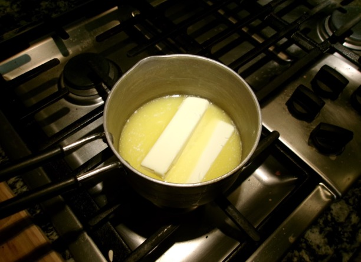
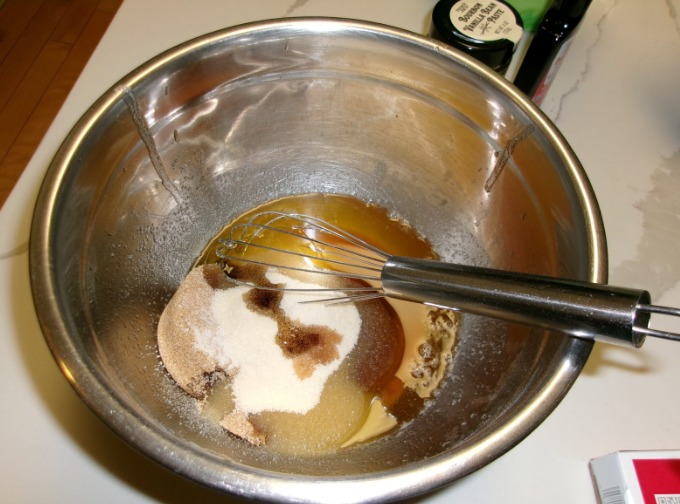
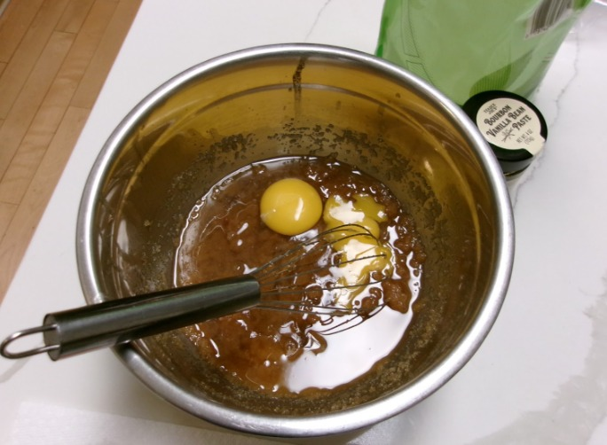
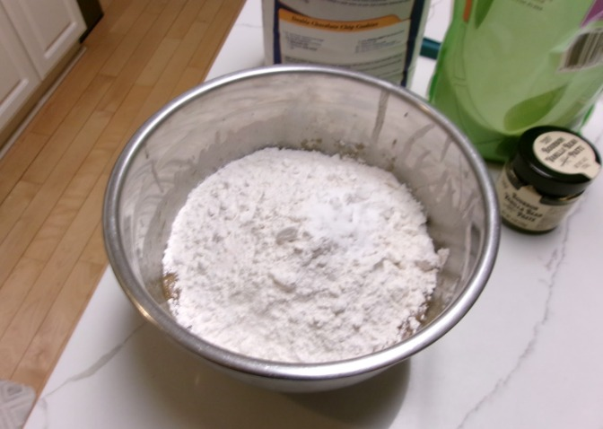
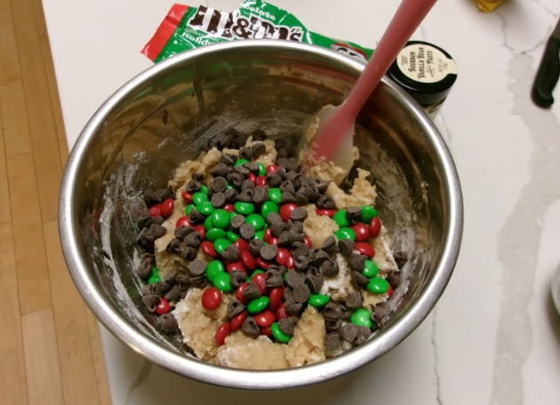
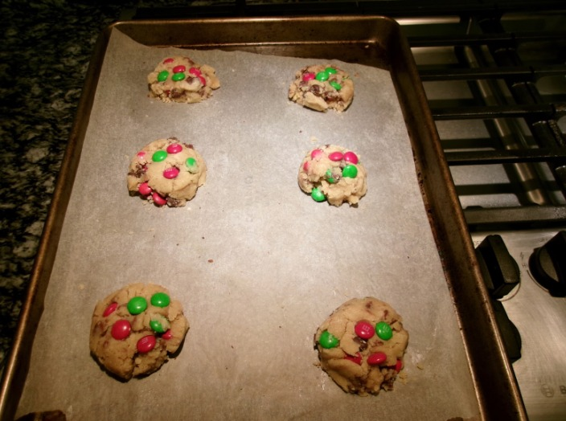

entry #6: christmas m&m cookies
12.25.25
Entry #6: This season feels like a pause. The first semester of senior year is over, applications are in, and the next milestone of college decisions waits ahead. Baking these Christmas M&M cookies felt grounding in a moment where almost everything else is uncertain. It is rare to stand at a point in life where the future could stretch anywhere at all, shaped by place, people, and paths not yet chosen. That openness is both exciting and intimidating. For now, there is comfort in simple rituals: browned butter, familiar sweetness while the rest of the story prepares to unfold.
ingredients: serving size 2-3 or just one hehe
- - cup butter, browned (113g)
- - 1/2 cup brown sugar (100g)
- - 1/4 cup granulated sugar (50g)
- - 1 tsp vanilla paste (or extract)
- - one large egg, room temperature (50g)
- - 1 1/2 cups all-purpose flour (190g)
- - 1/2 tsp baking soda (3g)
- - 1/4 tsp salt (1g)
- - holiday m&ms
- - 1/2 cup mini semi-sweet chocolate chips (90g)
recipe:
- Brown your butter on a stovetop until it's light brown, then take it straight off the heat.
- Combine the cooled brown butter, brown sugar, and granulated sugar briefly with a whisk.
- Add in your room-temperature egg and either vanilla extract or vanilla bean paste.
- Combine your dry ingredients of flour, baking soda, and salt into the same bowl.
- Pour in your holiday M&Ms, as well as your chocolate chips. We recommend either semi-sweet or dark chocolate chips. Let this dough chill for 1 hour, overnight to let the flavors within the dough develop.
- Shape your cookies and place some M&Ms or chocolate chips on top. Bake them for 9-12 minutes, until the center is just barely done. Let the cookies cool and set.





